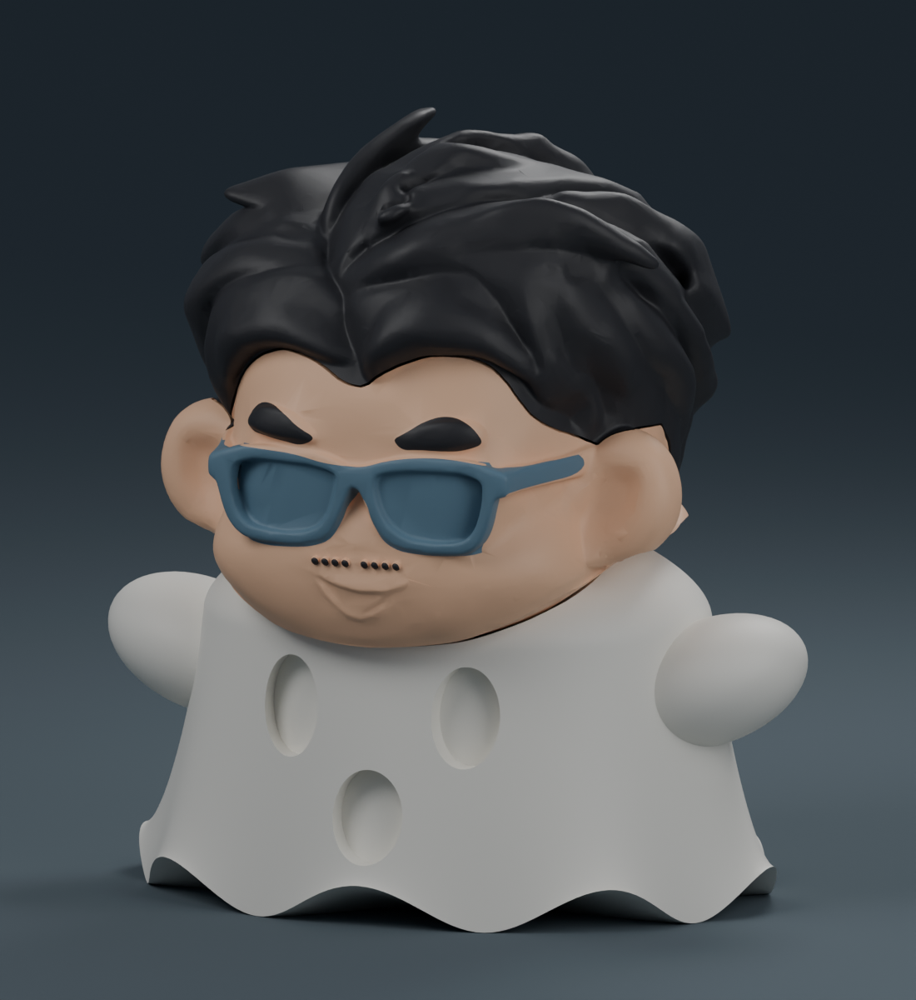

讓披風，更像一件披風。
兩張圖片均由實際模型以相同視角渲染。臉、頭髮與組裝接點保留。

原版
圓形袖角、較平順的衣身與直壁凹槽。

精修版
連續袖角、自然垂墜皺褶、柔化下襬與圓弧表情內壁。
約 10 公分高，三件組裝。精修版身體預估 3 小時 18 分鐘；尚未實體試印。
查看精修版與下載兩張圖片均由實際模型以相同視角渲染。臉、頭髮與組裝接點保留。

圓形袖角、較平順的衣身與直壁凹槽。
連續袖角、自然垂墜皺褶、柔化下襬與圓弧表情內壁。
約 10 公分高，三件組裝。精修版身體預估 3 小時 18 分鐘；尚未實體試印。
查看精修版與下載